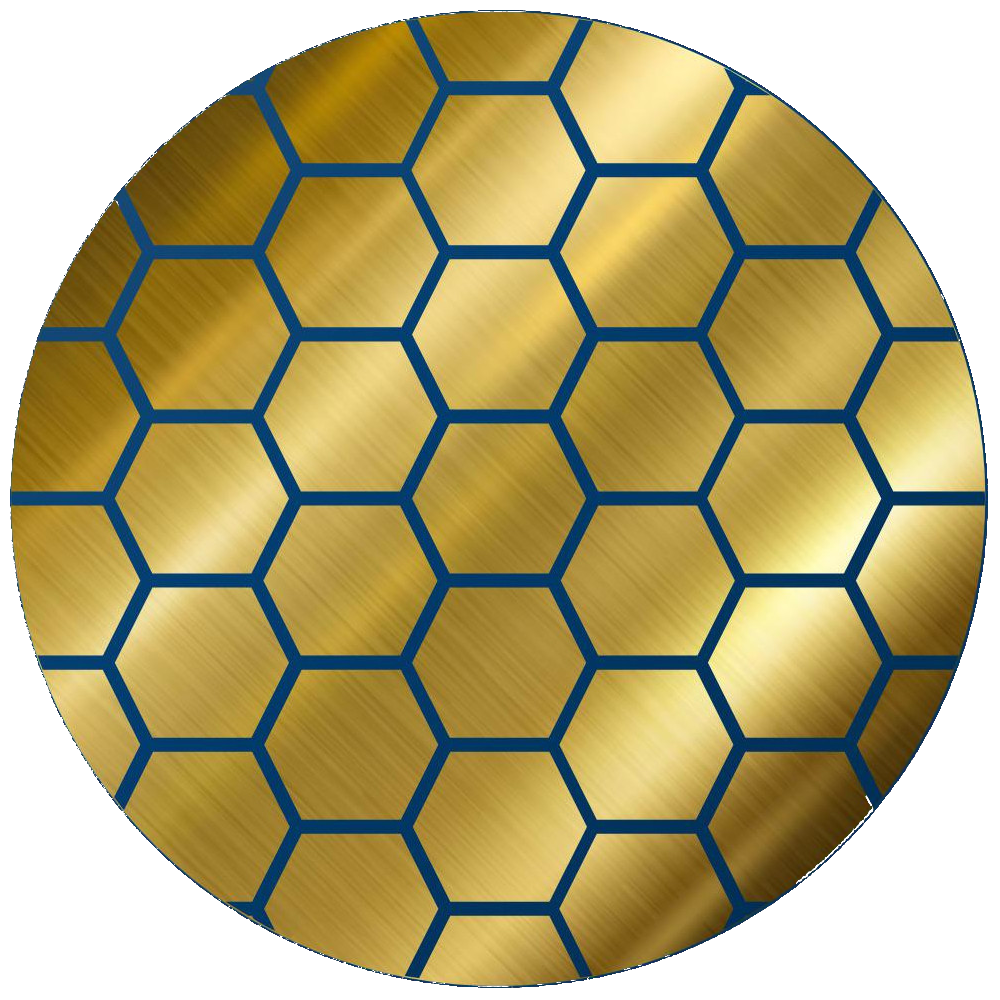

About me
Hi, I'm John! I'm a student at Georgia Tech studying Computer Science with a minor in Math. Currently seeking 2026 internships related to software engineering.
Experiences
Software Development Engineer Intern
Summer 2025
Worked on scalable backend systems and contributed to team projects in Bellevue, WA.
Teaching Assistant, Data Structures & Algorithms
2025 - Present
Assisted students, graded assignments, and led recitation sessions at Georgia Tech.

Design for Testability Member
2024 - 2024
CPU Debugging & Design
Education
B.S in Computer Science, Minor in Math, Graduation: May 2027
Georgia Institute of Technology, Atlanta, GA
Georgia Institute of Technology, Atlanta, GA